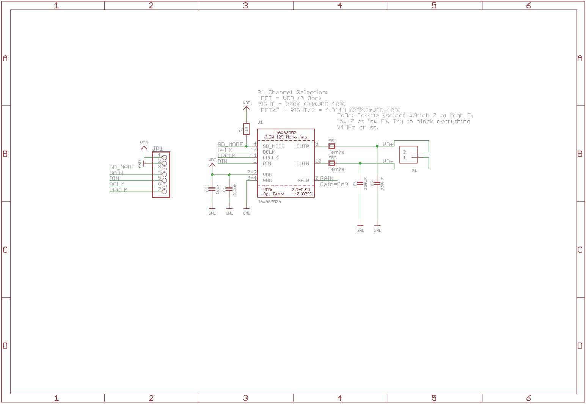
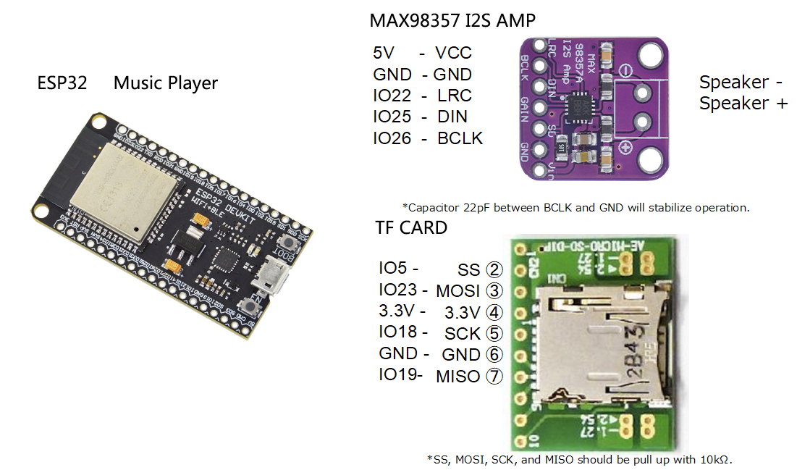

I2S Mono Class-D Amplifier
MAX98357A
把数字 I2S 音频直接变成可驱动扬声器的单声道功率输出；内置 DAC 与 Class-D 功放， 不需要 MCLK，适合 ESP32-S3 语音提示、小型播放器和联网音箱。
先看关键规格
输出功率取决于供电、扬声器阻抗、散热和允许失真；下列功率值对应 5 V、4 Ω 负载。
信号怎么走
MAX98357A 接收三线标准 I2S，内部完成数模转换、声道选择和功率放大。
ESP32-S3
输出 PCM 数字音频
三线 I2S
BCLK · LRCLK · DIN
MAX98357A
DAC + 单声道 Class-D
4 Ω 扬声器
OUT+ / OUT− 差分驱动
接口与作用
模块常见排针为 7 个逻辑/电源接口，扬声器另接 OUT+ 与 OUT−。
| 接口 | 类别 | 用途 | 本方案建议 |
|---|---|---|---|
VDD |
电源 | 2.5–5.5 V 供电 | 用足额、稳定的 5 V 供电 |
GND |
电源 | 电源与数字信号参考地 | 与 ESP32-S3 电源地共地 |
SD_MODE |
控制 | 关断与左/右/混合声道选择 | 默认模块约 1 MΩ 上拉时输出 L/2 + R/2 |
GAIN |
控制 | 设置功放增益 | 悬空为 9 dB |
DIN |
I2S | 串行音频数据输入 | 接 ESP32-S3 GPIO6 |
BCLK |
I2S | 位时钟输入 | 接 ESP32-S3 GPIO4 |
LRCLK |
I2S | 左右声道时钟，也常标作 LRC / WS | 接 ESP32-S3 GPIO5 |
默认模块电路
先识别板上的默认配置，再决定是否需要改动声道、增益或 EMI 滤波。
默认混合左右声道
SD_MODE通过约 1 MΩ 电阻上拉到 VDD，选择 L/2 + R/2 混合单声道。GAIN默认悬空，对应 9 dB 增益。- 只需要 DIN、BCLK、LRCLK 三根 I2S 信号线；不需要 MCLK。
去耦与 EMI 处理
- VDD 旁路采用 10 µF + 0.1 µF，走线应短并靠近芯片。
- OUT+、OUT− 各串磁珠，之后各用 220 pF 电容抑制高频干扰。
- 滤波网络不改变 BTL 本质：扬声器仍只能跨接两路输出。

ESP32-S3 推荐接线
以下映射避开旧版 ESP32 示例中的固定脚号，软件中的 I2S 引脚配置必须与实物一致。
| MAX98357A | ESP32-S3 / 电源 | 注意事项 |
|---|---|---|
BCLK |
GPIO4 |
位时钟；与代码中的 BCLK 配置一致 |
LRCLK |
GPIO5 |
字选择时钟；模块上也可能标为 LRC |
DIN |
GPIO6 |
接 ESP32-S3 的 I2S 数据输出 |
VDD |
稳定 5 V | 按扬声器功率留足电流余量；需要额定功率时不要从 3.3 V 引脚取电。若拟从主板 5 V 排针供电，先确认 IN-OUT 焊盘/跳线状态。 |
GND |
ESP32-S3 GND | 电源地与控制器共地，回流路径尽量短 |
OUT+ / OUT− |
扬声器 + / − | 仅跨接扬声器；两端均不得接地 |
上电前快速检查
先断电量测 OUT+、OUT− 是否误接地，再确认 5 V 极性、主板
IN-OUT 状态、公共地和 GPIO4 / 5 / 6 的配置；
首次播放从较低数字音量开始。
旧接线资料：只用于对照
这张图针对早期经典 ESP32 板卡与旧软件示例，不是本项目的 ESP32-S3 接线依据。

旧 GPIO 映射不适用
旧图使用 GPIO22（LRC）、GPIO25（DIN）、GPIO26（BCLK）。ESP32-S3 的封装、开发板引出与占用情况不同； 本方案改为 BCLK 4、LRCLK 5、DIN 6。
20 kHz 与 44.1 kHz 必须统一
旧示例代码若写 20000，而 README 声称 44.1 kHz，两者相互冲突。
播放源采样率与 I2S 配置不一致会导致音高、速度或数据解释异常，应统一为音频文件的真实采样率。
无声或失真时
按信号链从电源到格式逐项排查，通常比反复更换示例代码更快。
测量模块端 5 V
播放大音量时观察 VDD 是否明显跌落，并确认 ESP32-S3 与功放共地。
确认 BCLK 与 LRCLK
GPIO4 应输出位时钟，GPIO5 的频率应等于实际采样率。
统一采样率与位宽
音源、I2S 配置和写入数据的 16 / 24 / 32 bit 对齐方式必须一致。
检查 BTL 接法
扬声器只接 OUT+ / OUT−，不要把负端当成 GND，也不要并接耳机或单端输入。